Seven sign-ins, in the order of the sign-in list. Together they open 79 pages and touch every department. About 35 minutes.
On the first page choose Group of companies (or One company; the same people and steps work there too, without company switching).
| MCMaya | LFLiam | DODaniel | PRPriya | RDRachel | GHGrace | SAAdmin | |
|---|---|---|---|---|---|---|---|
| Self-service, calendar & directory | 15 | ||||||
| Requests | 4 | 1 | |||||
| Approvals | 1 | 1 | 1 | ||||
| My Team | 2 | ||||||
| People & HR | 6 | ||||||
| Time & Attendance | 2 | 3 | 1 | ||||
| Reviews, Benefits & Pension | 1 | 1 | 3 | 1 | |||
| Payroll | 6 | ||||||
| Accounts Payable | 6 | ||||||
| Receivable & Banking | 2 | ||||||
| Accounting | 8 | ||||||
| Purchasing | 1 | 2 | |||||
| Sales, Stock & Projects | 2 | 4 | 1 | ||||
| Documents & Contracts | 1 | 1 | 1 | ||||
| Reports & History | 1 | 2 | |||||
| Administration | 9 |
Ridgeline Timber · Equipment Operator — Everything an employee does for themselves — time, time off, requests, profile, documents.
Read “My summary”: hours this period, vacation left, latest pay, open requests.
Point out: Every role lands on a home page built for them.
Type 8 h Mon–Fri. On one day type 6 regular + 3 Banked OT → red error. Change to 2 → Send for approval.
Point out: “10.00 h left” beside Banked OT; regular + banked never over 8.
See the Banked OT card. Request 2 days vacation (the hours fill in: 14 h). Open the Calendar tab, then Calendar in the menu (Month · Week · Day).
Point out: Banked hours are used on the timesheet, not requested.
New Purchase Order $28,500 grapple · New Expense Claim $640 boots with the receipt · New Travel Request.
Point out: Each one says who it is with now — she never picks the approver.
Move a task along: press 75% on the safety walk.
Point out: Managers see the change on their board.
Overview · Employment · Pension & Benefits (own pension) · Reviews · Certificates (add one with a PDF).
Point out: Time off lives in My Time Off; documents in My Documents.
Open the T4 2025 → Preview → Download PDF. Same for a pay statement and the Employee Handbook.
Point out: Every document previews on screen and downloads as a PDF.
Find Liam; press / anywhere to search.
Point out: Search only shows what this role may open.
Choose a look → Coastal → Dark → Done. Leave a Feedback note.
Point out: The look is saved on this device only.
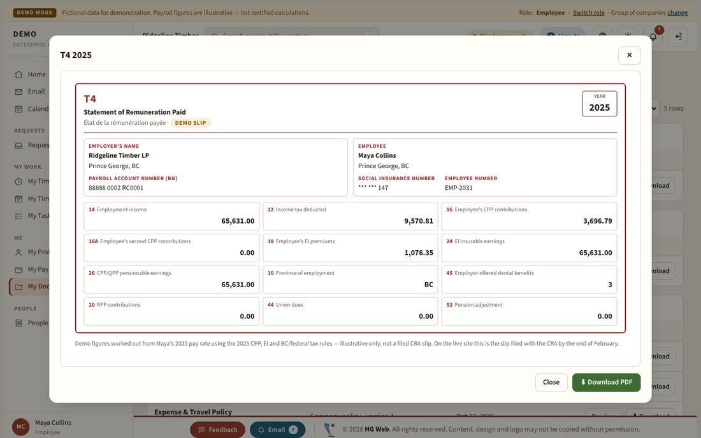
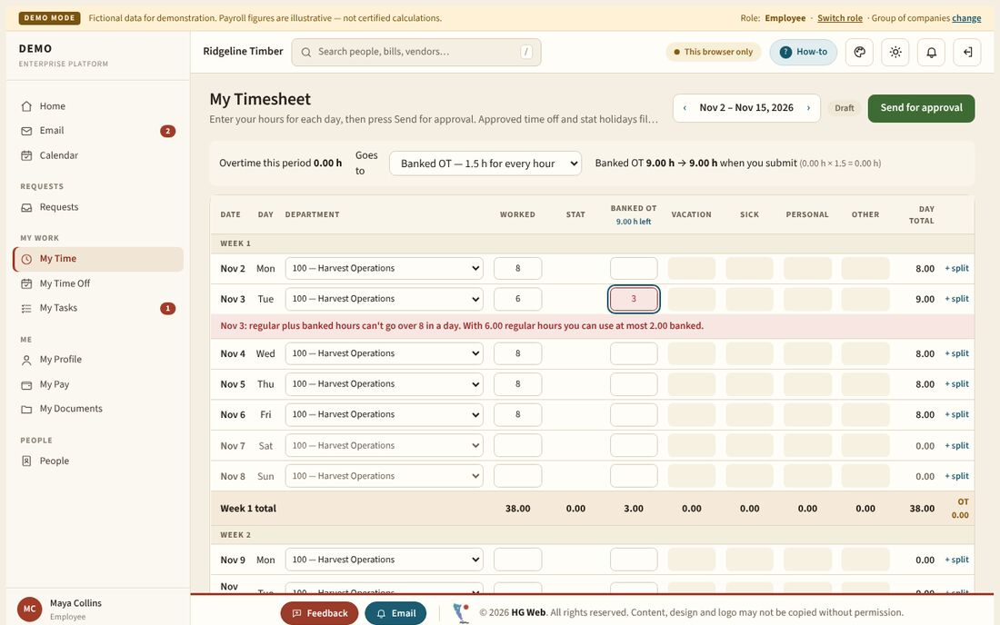
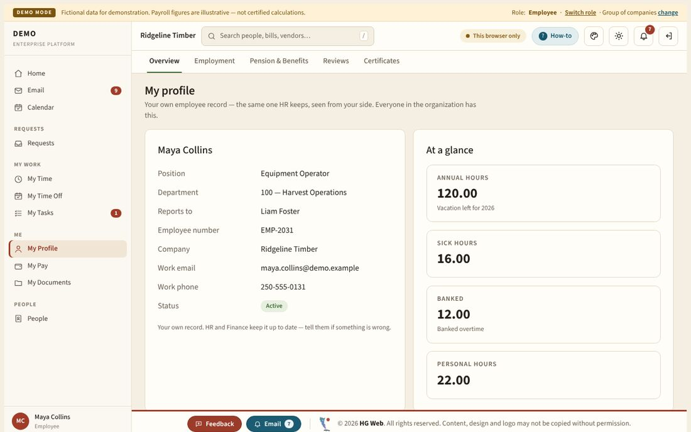
/dashboard/me/time/me/time-off/me/profile/events/calendar/month/requests/requests/new/po/requests/new/expense/requests/new/travel/me/tasks/me/profile/me/profile/employment/me/profile/benefits/me/reviews/me/certifications/me/pay/me/documents/people/directory/people/org-chartRidgeline Timber · Field Supervisor · Maya's manager — A manager approves the team's work, asks HR for hires and proposes projects.
Open “Waiting on you” → Approvals with category chips.
Point out: Only his team's items appear.
View full timesheet (banked hours shown) → Approve.
Point out: Approved hours flow to payroll.
Approve the time off, the $640 expense claim, the $28,500 purchase order and the travel request.
Point out: Over $5,000 goes on to the Director automatically.
New task for Maya on the board; check the team's time off.
Log Truck Driver × 2, $33–37/h, Prince George → Send to HR Manager.
Point out: Same fields as HR's form; the list shows only his departments' requests and their status.
Skid Road Upgrade · Harvest Operations · $64,000 · Nov 16 – Dec 18 · description · attach the quote PDF → Send for Director approval.
Point out: Starts as Pending Director Approval — not open for time or costs yet.
Finish Maya's manager review with a rating → Complete review.
Upload a grapple service contract → open it.
Point out: Who uploaded what, and when, is kept.
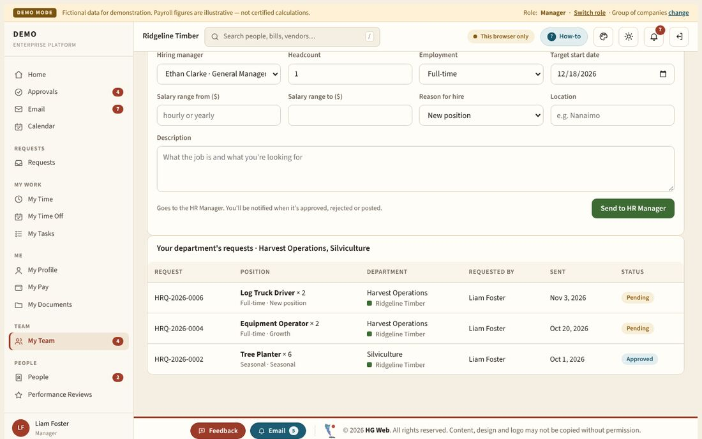
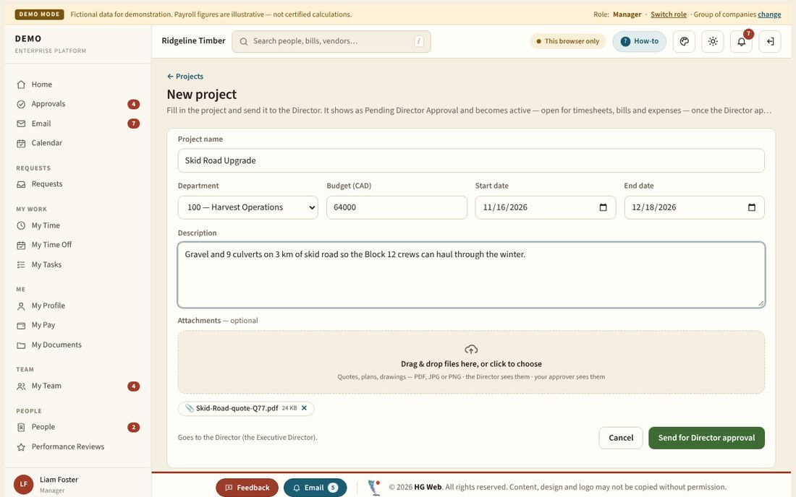
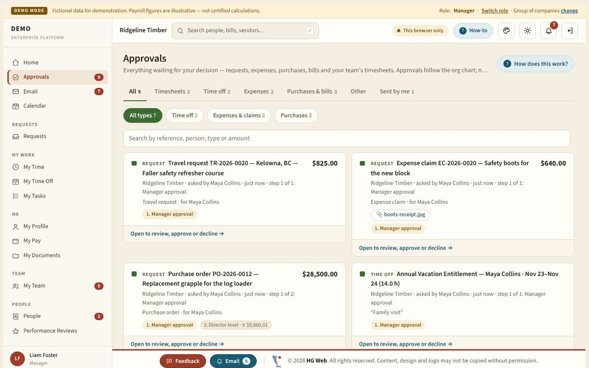
/approvals/hr/timesheets/team/hr/leave/team/hiring/projects/projects/new/hr/reviews/documents/contractsAlderbrook Holdings · approves only the finance team — Finance pays, collects, reconciles and closes the books.
Only his finance team's items are here; open bill INV-10245 → Approve.
Point out: Maya's requests are not routed to Finance.
Open Maya's $640 claim EC-2026-0020 → Record as paid.
Point out: A claim goes from approved to paid in one step.
Bill 20441 · $6,400 · drop the invoice PDF + delivery photo → Send for approval. Open the PDF on the bill → Download.
Point out: One or more PDFs or images per bill.
Two bills, each with its own files → Save. Pay approved bills in one EFT run.
Point out: Each bill keeps its own files.
Run the 3-way match (PO · receipt · bill).
Point out: Differences are flagged before anything is paid.
New invoice → deposit batch. Load sample statement → Auto-match.
Point out: Matched lines clear themselves.
Overview · Journal entries · Recurring · Month-end · Fixed assets · Budgets · Chart of accounts · Inter-company.
Point out: A closed month can't be back-dated into.
Sales orders · Shipments · Stock · Items; projects budget vs spent.
All files; benefits & pension view + Download only; Trial balance.
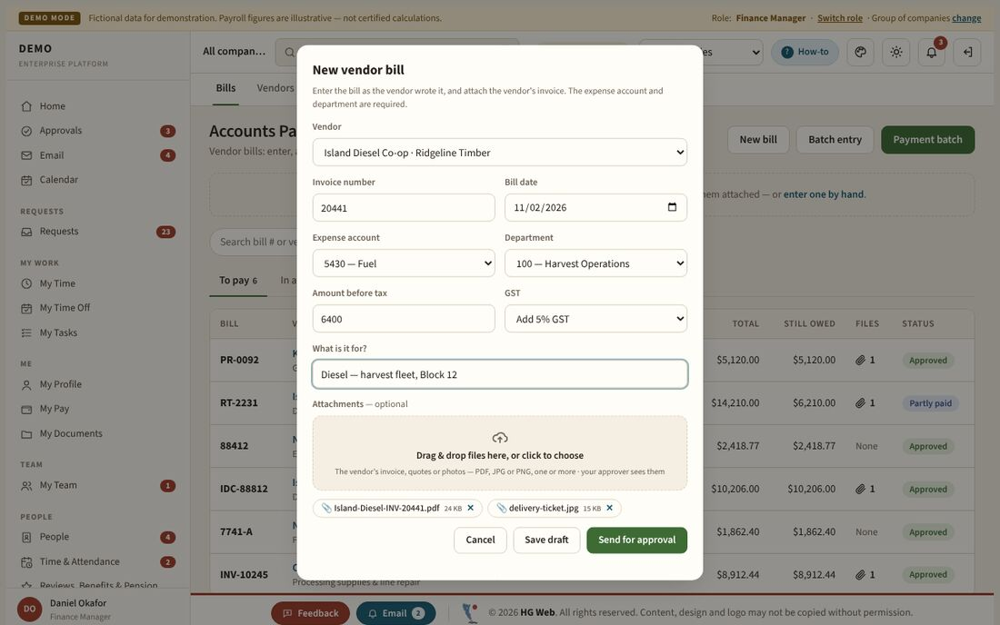
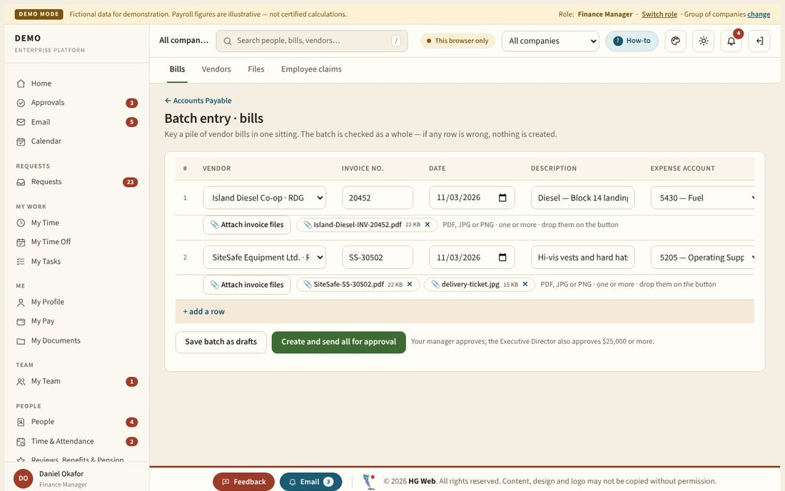
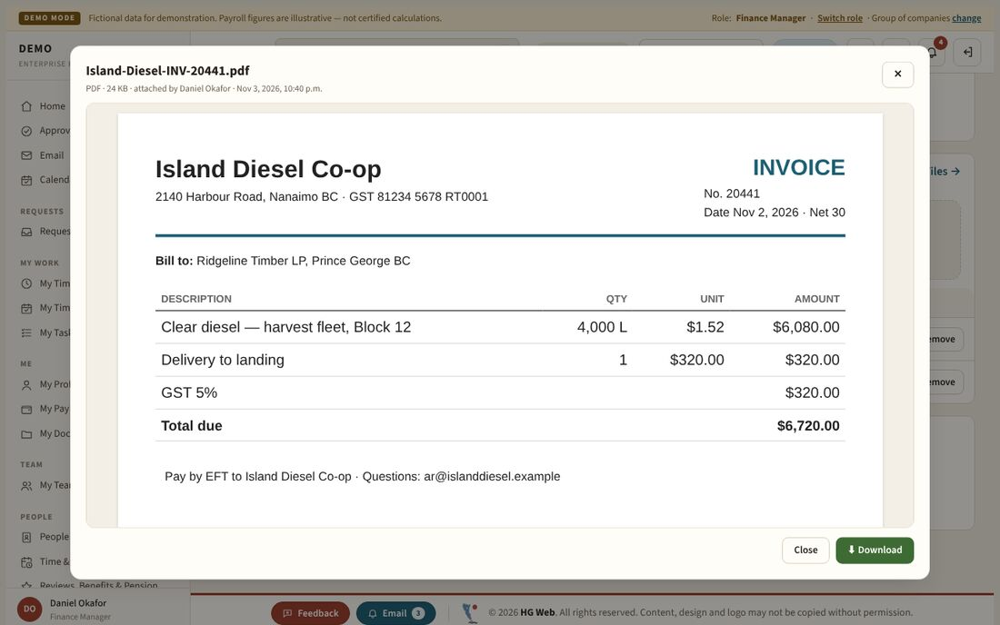
/approvals/requests/finance/finance/expenses/finance/finance/ap/finance/ap/vendors/finance/ap/attachments/finance/ap/batch/finance/ap/pay/procurement/match/finance/ar/finance/banking/finance/journals/finance/recurring/finance/periods/finance/assets/finance/budgets/finance/accounts/finance/interco/sales/orders/sales/shipments/inventory/stock/inventory/items/documents/hr/benefits/reportsAlderbrook Holdings · all companies — HR keeps people records up to date and decides every hiring request.
Search → open Maya's record and its tabs.
Point out: Every change to a record is kept in its history.
Approve Liam's Log Truck Driver · Reject the AP Clerk with a note · Post job for the Tree Planters.
Point out: Pending · Approved · Rejected · Posted; a posted job opens under Hiring.
Add an employee → tick the checklist. New opening with Grace as hiring manager → it goes to her for approval.
Send a renewal reminder for an expired or expiring ticket.
Point out: The reminder is written into the history.
Check who hasn't sent; see balances incl. banked overtime.
Start a review cycle · enrol someone in Dental · Pension: enrol Owen Murphy, Download.
Point out: HR edits; Finance and Payroll only view.
End Emma Lawson's seasonal employment → a draft Record of Employment goes to payroll.
Point out: Payroll gets it straight away.
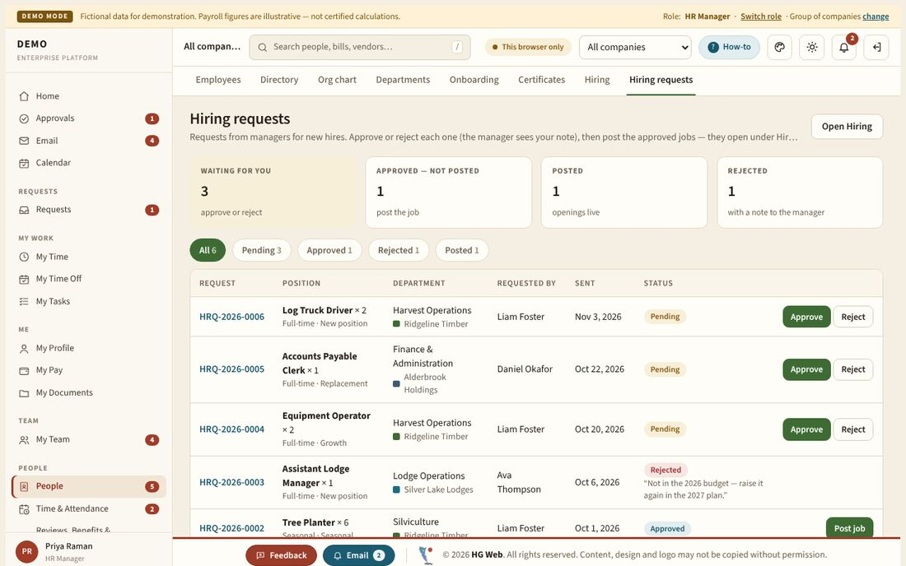
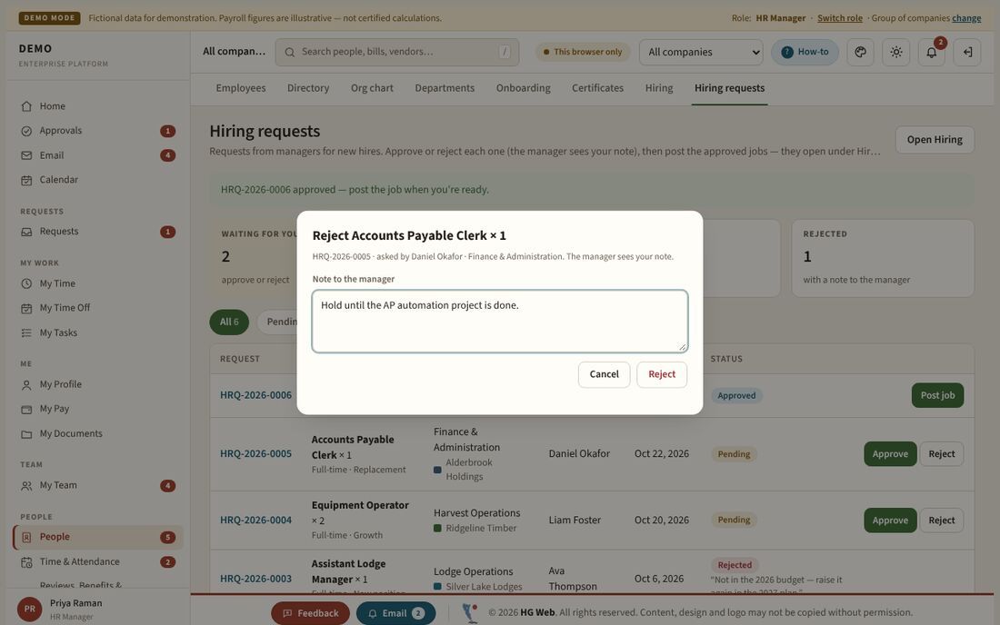
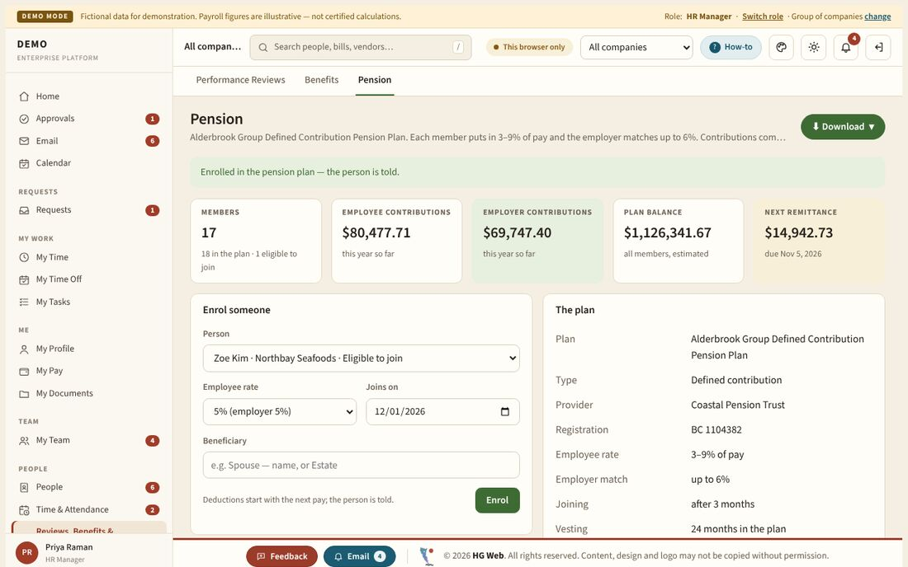
/hr/employees/hr/hiring-requests/hr/hiring/hr/onboarding/hr/departments/hr/certifications/hr/timesheets/payroll/timesheet-status/hr/leave/hr/reviews/hr/benefits/hr/pensionAlderbrook Holdings — Payroll has a run ready to go — calculate, send, file.
Open PR-2026-0019 Alderbrook Holdings (Oct 5–18).
Point out: Everything is ready — no setup on stage.
Calculate → 6 people, no warnings → Send for approval.
Point out: It now waits on the Executive Director.
Issue the ROE Priya started; mark the PD7A remittance paid.
Point out: Each is tracked to its due date and who filed it.
Pay statements, T4 boxes, tax tables.
Point out: T4 boxes add up from the posted runs.
Who is approved for the next run.
Point out: Benefits and pension are view + download for payroll.
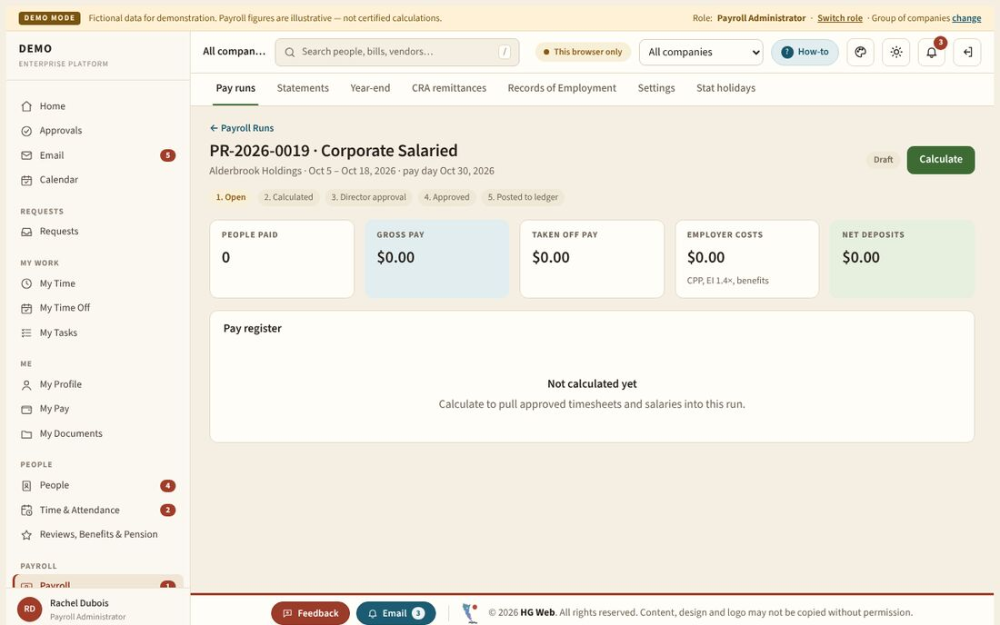
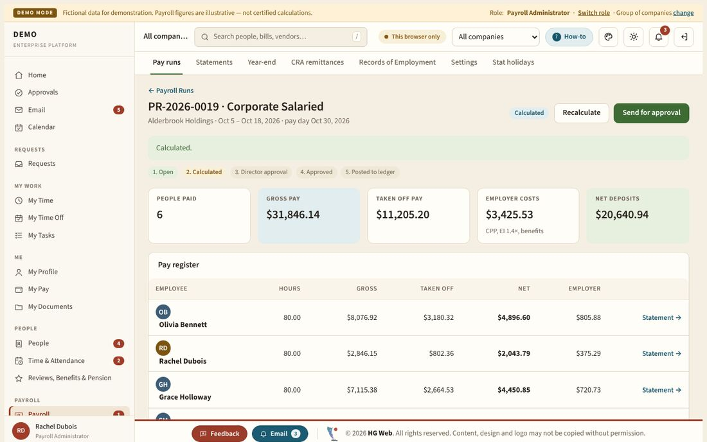
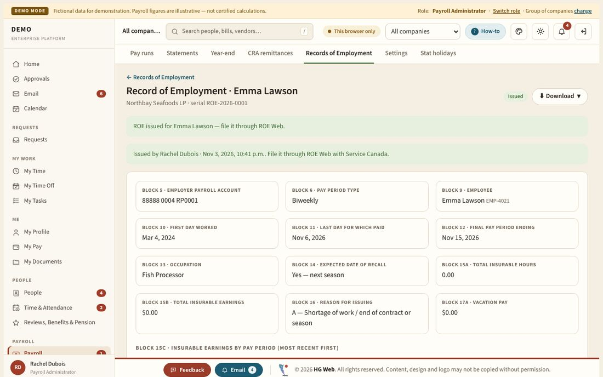
/payroll/runs/payroll/roe/payroll/remittances/payroll/statements/payroll/yearend/payroll/settings/payroll/timesheet-status/hr/pensionAlderbrook Holdings · Executive Director — The Director approves new projects and the big items, and sees the whole group.
Banner: projects pending Director approval — waiting for you. Open Skid Road Upgrade.
Point out: Block 14 Replanting is also waiting; Lodge Dock Extension shows a rejection with its comment.
Read name, department, budget, dates, description; open the quote PDF. Comment → Approve project.
Point out: Only approved projects become Active and take hours and costs. Reject needs a comment.
Approve the payroll, the $28,500 purchase order and the job opening Priya sent.
Point out: Nothing sits in an inbox — approve with a note, right there.
Every team's contracts, values and end dates.
Profit & Loss · Balance Sheet · Headcount; History of today.
Point out: Each company side by side, plus the whole group.
Rachel posts the payroll · Ethan Clarke: Purchasing › Purchase orders → Receiving for PO-2026-0012 · Maya: all approved.
Point out: Request → approval → PO → goods, all linked; the last approval makes the order ready to print. Olivia Bennett (CEO) can do everything on this page too.
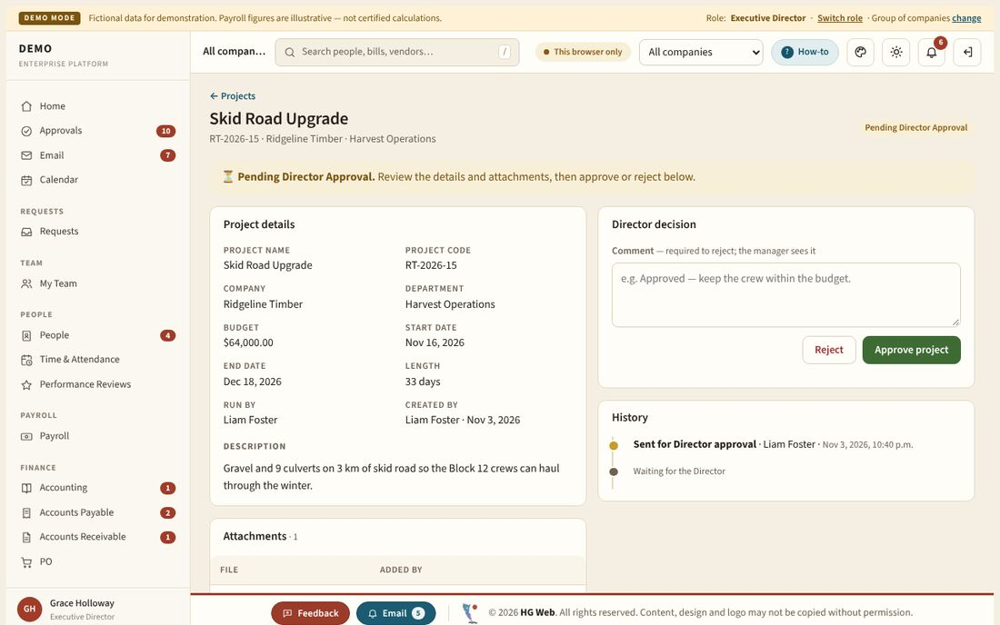
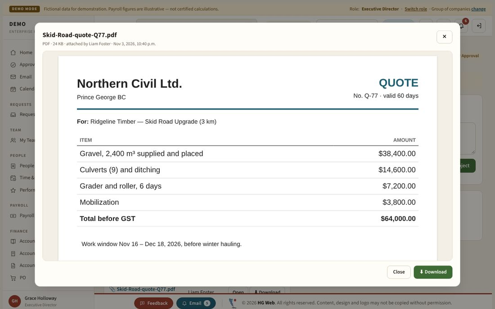
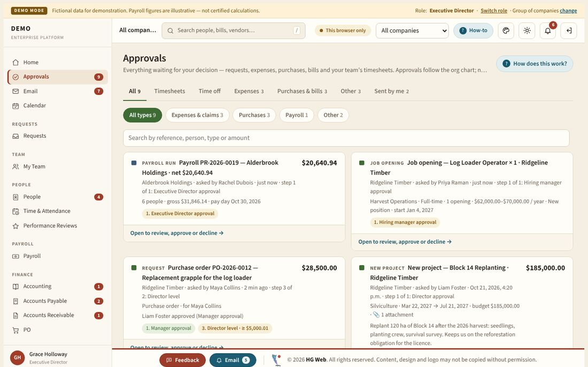
/projects/dashboard/approvals/documents/contracts/reports/history/procurement/pos/procurement/receivingAll companies · super administrator — The administrator sets the rules and can prove every step.
Show Grace's Executive Director role and Rachel's Payroll Administrator role; the four companies.
Point out: Roles decide every menu a person sees.
Change a threshold (e.g. purchase orders $5,000 → $10,000). See New projects → Director approval.
Point out: Manager first; Director above the threshold.
Every click of the demo — hiring decisions, project approval, files — who and when; resolve Maya's note.
Point out: Nothing happens without a record of it.
Menus, pages, terminology, versions; the wording of every email; demo settings; how-to guides.
Point out: Menus and wording change without code.
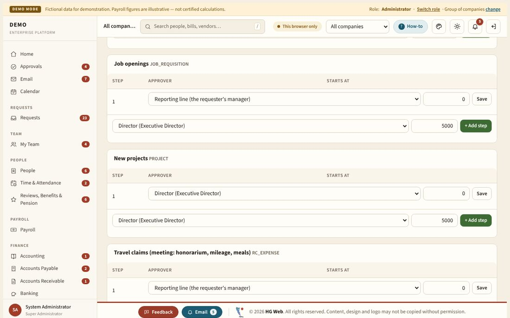
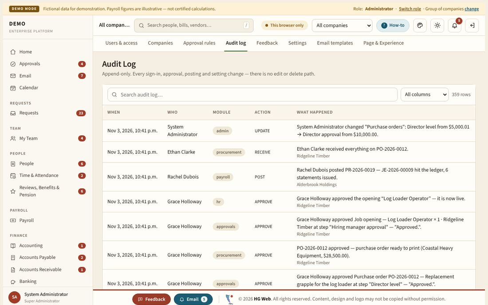
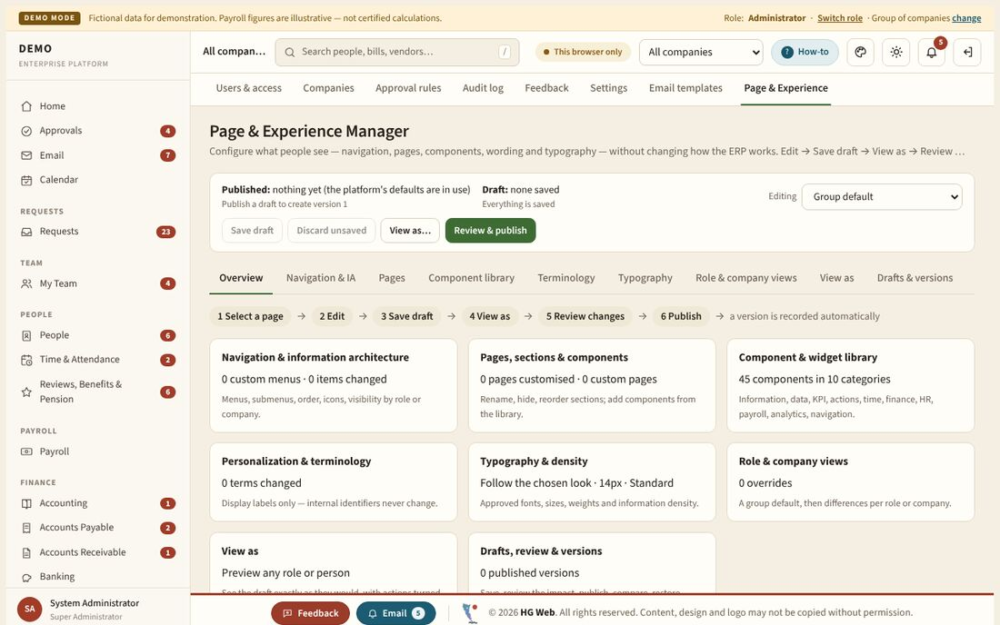
/admin/users/admin/companies/admin/workflows/admin/audit/admin/feedback/admin/experience/admin/email-templates/admin/settings/help